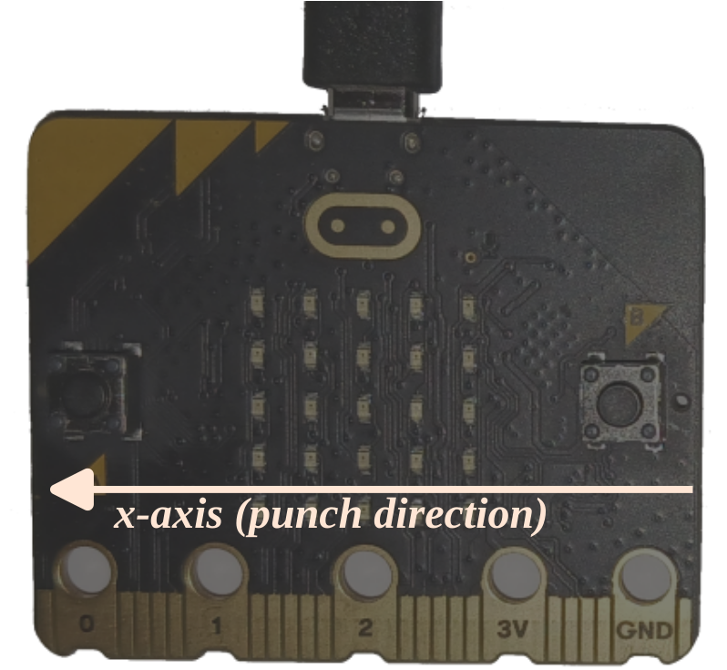

Punch-o-meter
Trong phần này chúng ta sẽ chơi với accelerometer trên board.
Chúng ta đang xây dựng cái gì lần này? Một punch-o-meter! Chúng ta sẽ đo sức mạnh cú đấm của bạn. À thực ra là gia tốc (acceleration) tối đa mà bạn có thể đạt được, vì gia tốc là thứ mà accelerometer đo. Tuy nhiên, sức mạnh và gia tốc tỷ lệ thuận nên đây là một xấp xỉ tốt.
Như chúng ta đã biết từ các chương trước, accelerometer được tích hợp bên trong package LSM303AGR. Và giống như magnetometer, nó có thể truy cập thông qua bus I2C. Nó cũng có cùng hệ tọa độ như magnetometer.
Gravity is up?
Chúng ta sẽ làm gì đầu tiên?
Thực hiện một sanity check!
Bạn đã có thể viết một chương trình liên tục in dữ liệu accelerometer trên console RTT từ chương I2C. Bạn có quan sát thấy điều gì thú vị ngay cả khi giữ board song song với sàn nhà với mặt LED hướng xuống?
Bạn sẽ thấy rằng cả giá trị X và Y đều khá gần 0, trong khi giá trị Z ở khoảng 1000. Điều này lạ vì board không di chuyển mà gia tốc của nó lại khác không. Chuyện gì đang xảy ra? Chắc phải liên quan đến trọng lực, đúng không? Vì gia tốc trọng trường là 1 g (aha, 1 g = -1000 từ accelerometer). Nhưng trọng lực kéo vật thể xuống nên gia tốc theo trục Z phải là dương, không phải âm.
Chương trình có lấy ngược trục Z không? Không, bạn có thể thử xoay board để canh chỉnh trọng lực theo trục X hoặc Y nhưng gia tốc đo bởi accelerometer luôn chỉ lên trên.
Điều xảy ra ở đây là accelerometer đo gia tốc riêng (proper acceleration) của board, không phải gia tốc mà bạn đang quan sát. Gia tốc riêng này là gia tốc của board nhìn từ một người quan sát đang rơi tự do. Một người quan sát đang rơi tự do di chuyển về phía tâm Trái Đất với gia tốc 1g; từ góc nhìn của họ, board thực sự đang di chuyển lên trên (xa khỏi tâm Trái Đất) với gia tốc 1g. Và đó là lý do tại sao gia tốc riêng chỉ lên trên. Điều này cũng có nghĩa là nếu board đang rơi tự do, accelerometer sẽ báo cáo gia tốc riêng bằng không. Xin đừng thử ở nhà. Hoặc thử nếu bạn sẵn sàng đánh rơi MB2 của mình.
Vâng, vật lý rất khó. Hãy tiếp tục.
Thử thách
Để đơn giản hóa phần mềm, chúng ta sẽ giả định rằng bạn đấm với board song song với mặt đất. Để đo độ mạnh của cú đấm, bạn cần tính đến cả gia tốc X và Y (bỏ qua Z vì nó chỉ phản ánh trọng lực). Để đơn giản hơn nữa, chúng ta sẽ giả định rằng bạn cầm board với nút B gần bạn và nút A ở phía xa hơn, rồi đấm về phía trước (ra xa bạn). Điều này có nghĩa là bạn đang đấm theo hướng X dương.

Đây là những gì punch-o-meter phải làm:
- Mặc định, ứng dụng không "quan sát" gia tốc của board.
- Khi phát hiện gia tốc X đáng kể (tức là gia tốc vượt ngưỡng nào đó), ứng dụng nên bắt đầu đo lường mới.
- Trong khoảng thời gian đo lường đó, ứng dụng nên theo dõi gia tốc tối đa quan sát được.
- Sau khi khoảng thời gian đo kết thúc, ứng dụng phải báo cáo gia tốc tối đa đã quan sát. Bạn có thể báo cáo giá trị bằng macro
rprintln!.
Hãy thử và cho tôi biết bạn có thể đấm mạnh đến mức nào ;-)
set_accel_scaleCó một API bổ sung hữu ích cho nhiệm vụ này mà chúng ta chưa thảo luận: set_accel_scale — bạn cần nó để đo được giá trị g cao (mặc định chỉ đo đến ±2g).
Lời giải của tôi
Đây là lời giải của tôi (src/main.rs).
Bạn có thể đạt giá trị G khá cao bằng cách gõ cạnh MB2 vào bàn, nhưng điều này có thể làm hỏng accelerometer vĩnh viễn. Hãy thực hiện cú đấm nhẹ nhàng vào không khí thay vì đập board vào vật cứng.
#![deny(unsafe_code)]
#![no_main]
#![no_std]
const TICKS_PER_SEC: u32 = 400;
const THRESHOLD: f32 = 1.5;
use cortex_m::asm::nop;
use cortex_m_rt::entry;
use panic_rtt_target as _;
use rtt_target::{rprintln, rtt_init_print};
use microbit::{
hal::{twim, Timer},
pac::twim0::frequency::FREQUENCY_A,
};
use lsm303agr::{AccelMode, AccelOutputDataRate, AccelScale, Lsm303agr};
#[entry]
fn main() -> ! {
rtt_init_print!();
let board = microbit::Board::take().unwrap();
let i2c = { twim::Twim::new(board.TWIM0, board.i2c_internal.into(), FREQUENCY_A::K100) };
let mut delay = Timer::new(board.TIMER0);
let mut sensor = Lsm303agr::new_with_i2c(i2c);
sensor.init().unwrap();
sensor
.set_accel_mode_and_odr(&mut delay, AccelMode::Normal, AccelOutputDataRate::Hz400)
.unwrap();
// Allow the sensor to measure up to 16 G since human punches
// can actually be quite fast
sensor.set_accel_scale(AccelScale::G16).unwrap();
let mut max_g = 0.;
let mut countdown_ticks = None;
loop {
while !sensor.accel_status().unwrap().xyz_new_data() {
nop();
}
// x acceleration in g
let (x, _, _) = sensor.acceleration().unwrap().xyz_mg();
let g_x = x as f32 / 1000.0;
if let Some(ticks) = countdown_ticks {
if ticks > 0 {
// countdown isn't done yet
if g_x > max_g {
max_g = g_x;
}
countdown_ticks = Some(ticks - 1);
} else {
// Countdown is done: report max value
rprintln!("Max acceleration: {}g", max_g);
// Reset
max_g = 0.;
countdown_ticks = None;
}
} else {
// If acceleration goes above a threshold, we start measuring
if g_x > THRESHOLD {
rprintln!("START!");
max_g = g_x;
countdown_ticks = Some(TICKS_PER_SEC);
}
}
}
}Giữ board đúng hướng khi thử. Chắc chắn rằng không có gì (người, đồ vật) ở xung quanh bạn trước khi thực hiện "cú đấm". Hãy cẩn thận để không làm rơi hoặc làm hỏng board!